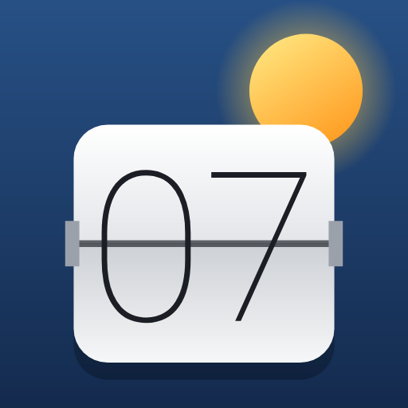
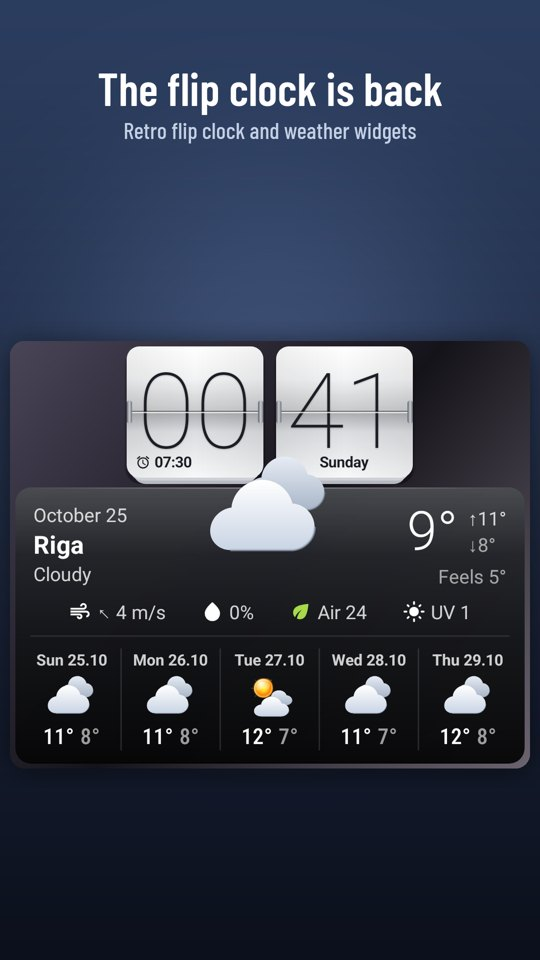
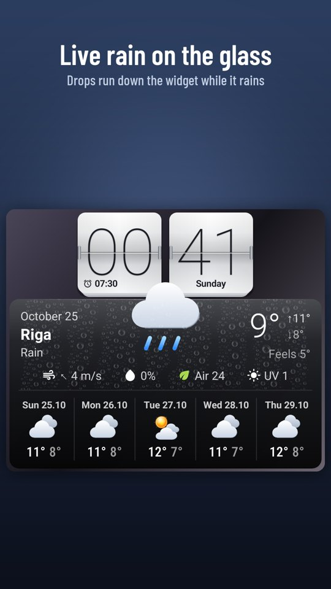
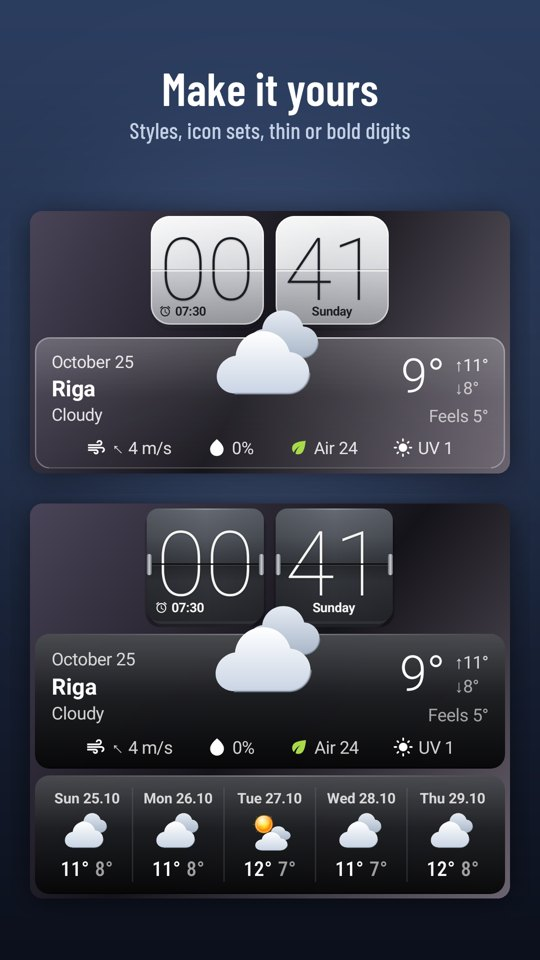
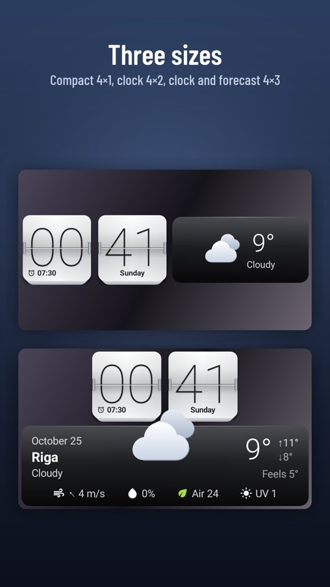
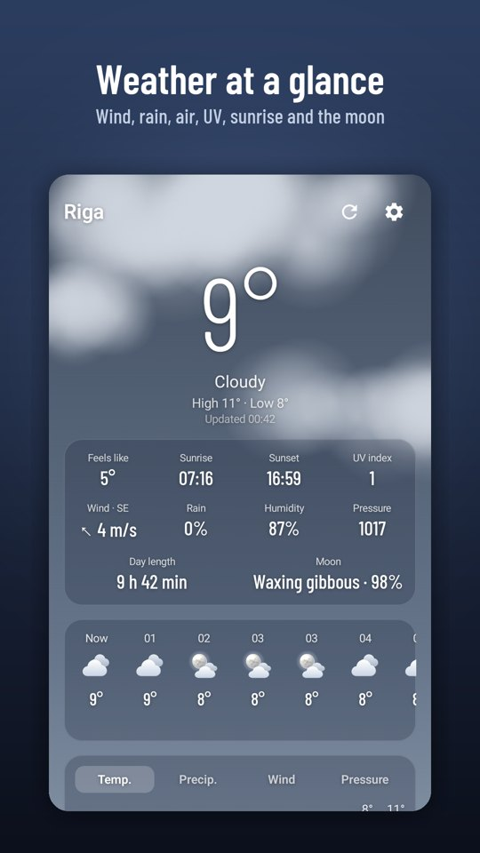
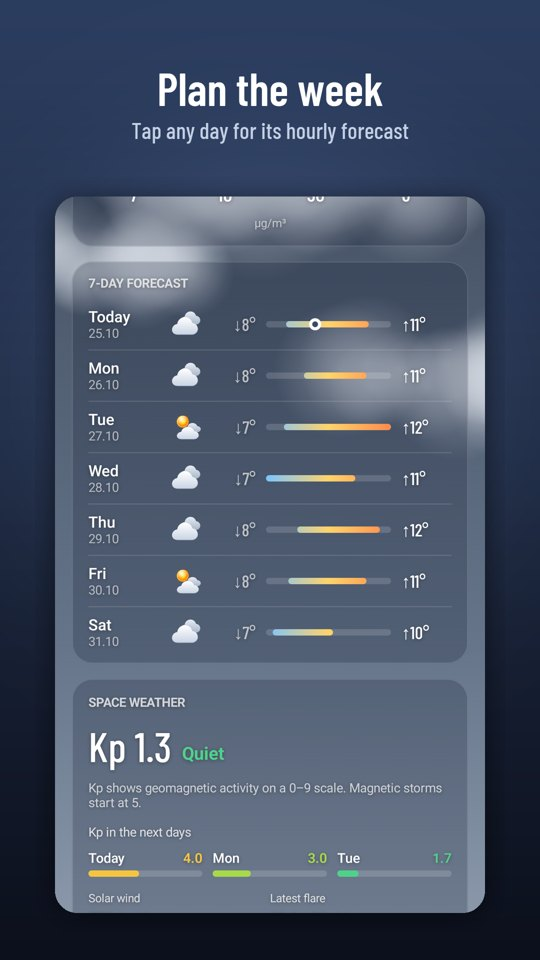

FlipSky
No ads. No subscription. Ever.The flip clock that made Android home screens beautiful, rebuilt for today's phones — with the weather, live rain on the glass and tonight's real moon.






Widgets
- Real flip cards that turn every minute, thin or bold digits
- Next alarm and the weekday right on the cards
- Compact 4×1, clock and weather 4×2, clock with a 5-day forecast 4×3
- Rain drops on the glass while it rains; the real moon phase at night
Weather
- Feels like, wind with direction, chance of rain, air quality, UV index
- 24-hour charts, a 7-day forecast, hourly detail for any day
- Sunrise, sunset, day length and the moon
Premium
FlipSky is complete for free. One purchase adds the glass styles, realistic, line and mono icons, snow, sun glint, fog and lightning on the widget, and space weather.
Privacy policy · Support: livonianlabs@gmail.com